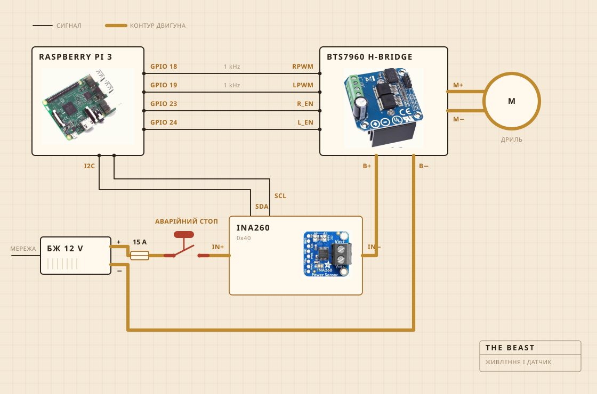

01
З чого вона зібрана
Крутить акумуляторний дриль. Він сидить у затискачі, прикрученому до кухонної дошки, і саме дошка тримає все вивіреним над каструлею. Головка колотівки це тверда деревина на сталевому валу, зібрана на гвинтах, а не на клею, і саме тому я зробив її, а не купив.
Електроніка живе в прозорому пластиковому контейнері, в основному щоб я бачив, чи не загорілося щось. Записом займається Raspberry Pi. Велика жовта кнопка розриває живлення мотора, і ніщо в софті не може цього скасувати.

- МоторАкумуляторний дриль у затискачі, обороти значно нижчі за повні
- КолотівкаТверда деревина та нержавна сталь, зроблена, а не куплена
- НагрівПлитка, яку регулятор потужності вмикає і вимикає
- КаркасКухонна дошка та пластиковий контейнер
- ЖивленняІмпульсний блок 12 V, з розетки
- МозокRaspberry Pi, пише у CSV
- ВідчуттяСтрум і напруга при збиванні, датчик у каструлі при витоплюванні
- СтопОдна велика кнопка, жорстко в проводах
02
Як вона з’єднана
Чотири сигнальні проводи і один товстий контур. Pi рахує, наскільки сильно і в який бік, струм насправді штовхає H-міст, і ці двоє ніколи не зустрічаються. Через те, чого торкається Pi, не йде більше кількох міліампер.
Кнопка це та частина, на яку варто подивитися. Вона взагалі не підключена до Pi. Вона стоїть у контурі мотора і розриває його, тож жоден збій у софті не відмовить її від зупинки. Що Pi може, так це помітити. Якщо він просить тридцять відсотків, а датчик повертає менше двохсот міліампер, він робить висновок, що контур розімкнений, і перестає просити.
Датчик стоїть у тому самому контурі, але його логічна частина живиться від Pi, і тому він відповідає навіть тоді, коли живлення зняте. У цьому весь фокус перевірки кнопки.

03
Де вона стоїть
Над мийкою. Каструля йде в чашу, згори лягає плоска накривка з прорізаним отвором під вал, і все, що тікає, попадає туди, де це не важливо.
Це та частина, яку ніхто не кладе в рендер. Половина роботи, коли збираєш щось на кухні, іде на рішення про те, куди дозволено дітися безладу.

04
За чим вона слідкує
Поки йде збивання, за струмом і напругою на лінії мотора, приблизно раз на секунду, і прямо у файл. Поки йде витоплювання, замість цього за датчиком у каструлі, а регулятор то вмикає плитку, то вимикає, щоб тримати число.
Ні мікрофона, ні камери, і це наступне, що я хочу виправити. Ставка досі була в тому, що якщо одного навантаження досить, щоб знайти злам, решта може почекати.

05
Що вона вирішує
Дві речі. Чи піднялося навантаження і чи впало потім достатньо, щоб оголосити злам, і чи має плитка бути ввімкнена або вимкнена, щоб стояти на 250 F.
Вона не знає, що таке кисляк. Вона не знає, що таке масло. Вона знає, що число якийсь час росло, а потім пішло вниз, і що ця форма означає, що робота закінчена.

Кисляк, колотівка, злам і година спостереження за кольором.